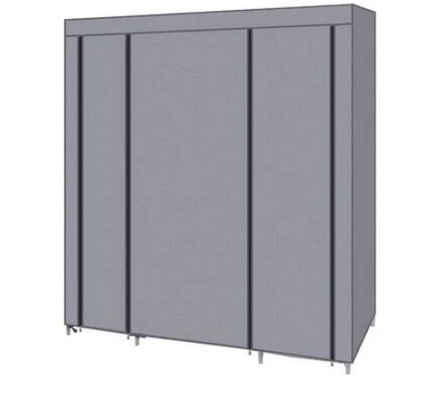

GrowBox Large

The GrowBox Large is the powerhouse of the series, specifically built for at-home and
commercial use. This product is perfect
for growing medium to large-sized plants that need additonal settings and care. The
GrowBox Large is intended for individual hobbists and commercial growers,
or plant producer. If you are concerned about maintaining an expensive or exoitic plant,
this device will perfectly care for your plant while
keeping you at ease. With additonal space and size, this product can maintain little to
no contact for further extended periods of time.
The Growbox Large's tech contains a camera (for active monitoring, timelapse feature,
etc), humidity sensor, temperature sensor,
water level sensor, and a touch screen display for quick data and status access.